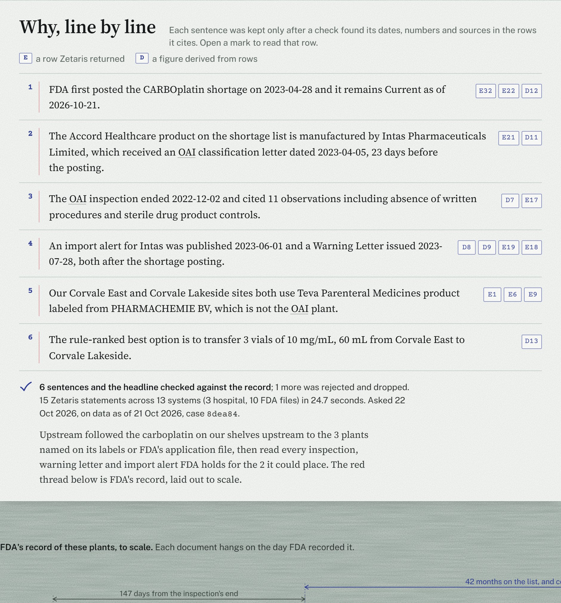
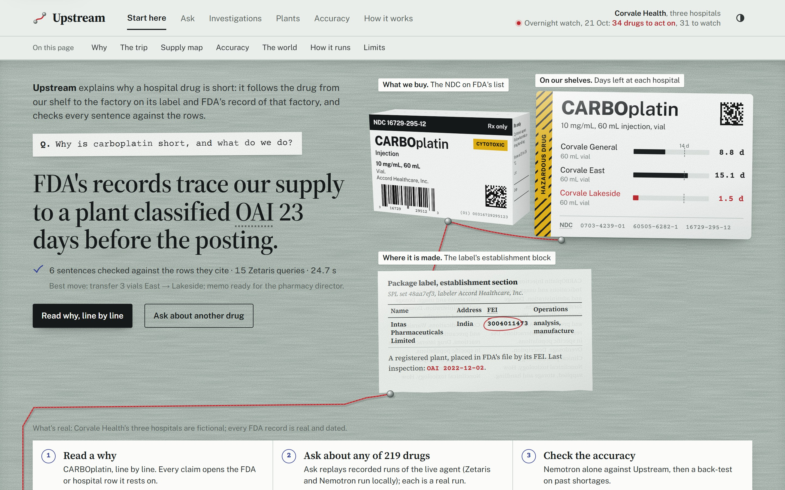
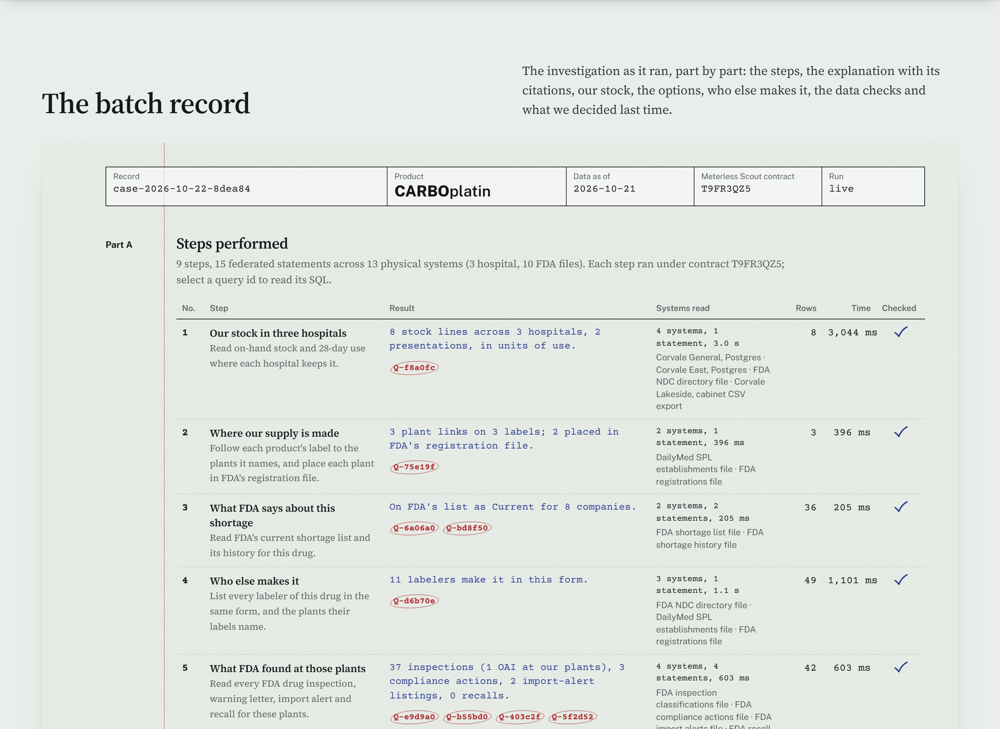
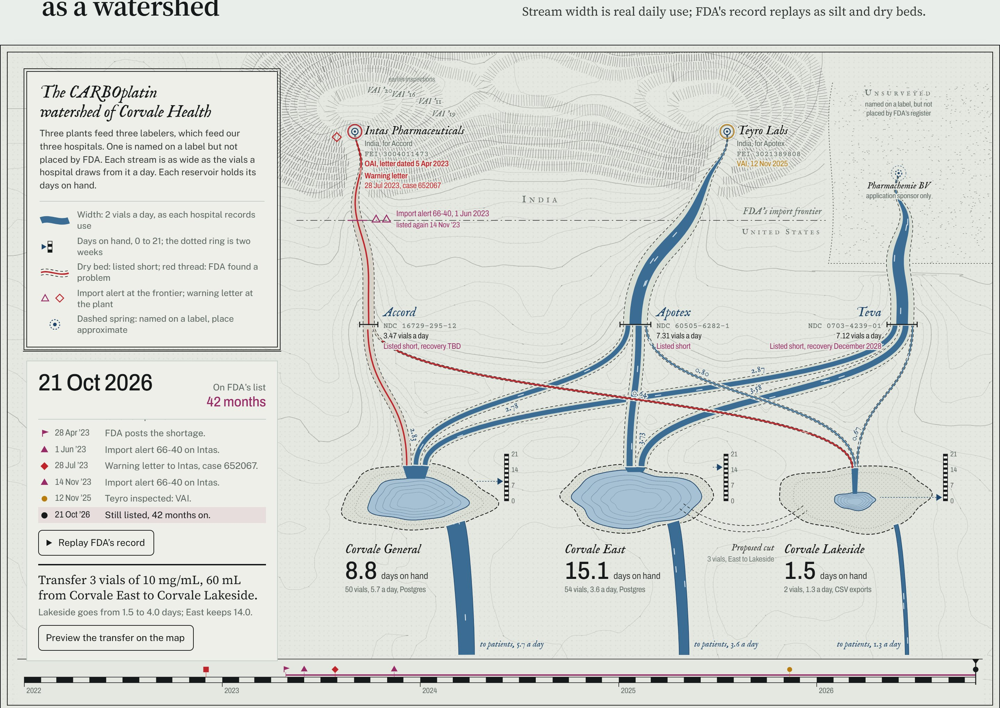
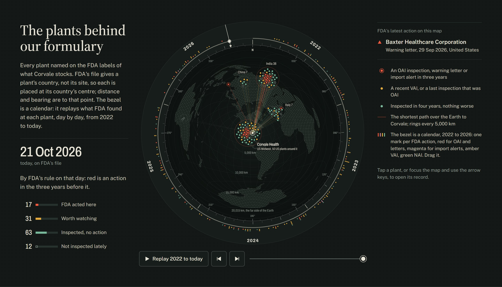
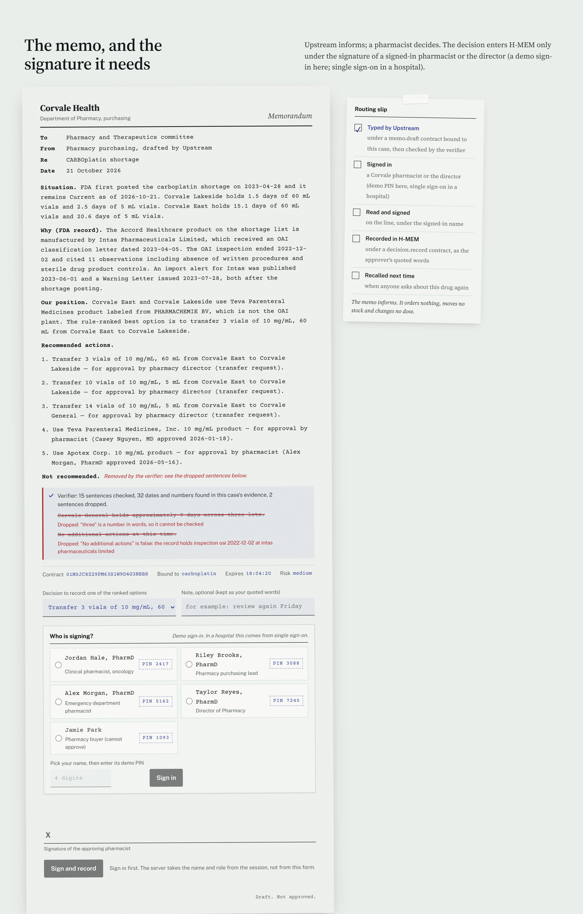

Upstream explains why a hospital drug is short. It follows the drug from the shelf to the plant on its label and FDA's record of that plant, and every sentence cites the row it came from.
| Corvale General | 8.8 d |
| Corvale East | 15.1 d |
| Corvale Lakeside | 1.5 d |
of staff time, nearly $900M a year, spent by US hospitals managing drug shortages.
Vizient survey, 2025
of the shortages ASHP tracked in 2025 had a cause that was unknown or not disclosed.
ASHP data, reported by AJMC
active US drug shortages in Q2 2026.
ASHP, reported by AJMC
The pharmacy buyer who has to answer that today, and the pharmacist or director who signs the decision. They piece it together by hand from FDA's website, wholesaler emails and their own stock spreadsheets. The facts are public, but scattered across a dozen FDA systems, keyed differently, and none of them knows what is on your shelf.
One question runs nine fixed steps. The red part is FDA's record; the blue part is what Upstream writes, checks and hands to a person.
"Our Accord carboplatin is made at Intas Pharmaceuticals' plant in Sanand, India (FEI 3004011473). FDA's inspection there ended 2022-12-02 and was classified OAI; the classification letter is dated 2023-04-05, 23 days before FDA posted the carboplatin shortage on 2023-04-28."

Each sentence carries citation ids. A chip opens the Zetaris query and the row it came from.
Live at /case/carboplatin, case 8dea84, data as of 21 Oct 2026.
| Rule | Fail | Query |
|---|---|---|
| Lakeside stock: NDC not on FDA's list | 11 of 140 | Q-265662 |
| General and East stock: NDC and unit | 0 of 686 | Q-02442a |
| Label plant not in FDA's registration file | 513 of 1,970 | Q-08b193 |
| Inspection FEI the file no longer holds | 19,103 of 40,361 | Q-a61817 |
| Inspection id repeated | 1,531 of 40,361 | Q-a61817 |
| Plant DUNS key in the registration file | 0 of 14,793 | Q-5606ea |
An undashed NDC can be read three ways (4-4-2, 5-3-2, 5-4-1). The activation accepts a reading only when exactly one is on FDA's list; otherwise the row is marked ambiguous for the DQ rule. Seven Zetaris 2.4.3.1 lessons are written up in the README for other builders.
| Engine | What it does in Upstream |
|---|---|
| Scout Intent | Decides intent, risk and scope; signs an HMAC execution contract. assertContract() runs before every tool. Shipped only as a spec, so we implemented it. |
| H-MEM | Remembers past decisions as the approver's quoted words, written only after a pharmacist or the director approves. recallForDrug() |
| World Model | Holds the supply chain as grounded entities with provenance; writes about unknown ids are refused. |
| Markovian | The overnight watch: 215 drugs in 18 chunks, with a fresh Scout contract per chunk. |
H-MEM, World Model, Markovian on their unmodified conformance suites; Scout harness PASS
Block recall on 61 labelled pharmacy prompts, 15 held out: orders, dosing, injections always refused
Contract scope correct; tampered, wrong-secret and expired contracts refused
World Model, 300 drugs: one file write instead of 2,700 (29.2 s before our deferred flush)
A Scout harness PASS shows the plumbing is spec-shaped, not classification quality; that is what our own eval measures.
false sentences written by three rounds of judges to slip past it were dropped; every true one tested was kept.
It is pattern-based: a strong filter, not a proof. The test sentences are in data/eval/verifier.json.
59 plant links across 18 recent shortages; ground truth from separate Python over FDA's files that imports nothing from Upstream.
| Upstream | Nemotron Ultra, no tools | |
|---|---|---|
| Reached the right plant | 52 of 59 | 27 of 54 |
| Right FDA FEI number | from the plant | 0 of 54 |
| Last inspection, class | 56 of 59 | 30 of 54 |
| Last inspection, date | 0 of 54 | |
| Invented an inspection date | never | 50 of 54 |
| Said it was confident | n/a | 54 of 54 |
Shortages FDA posted from 2022 with a placeable plant (92). Had FDA acted against a plant on the label in the two years before?
A plant's FDA record explains a shortage after the fact; it does not predict one. Upstream is built to explain, cite and act on what is known.
Where the trail exists, FDA acted about three months before the posting (median 98 to 103 days).

Home. The question, the cited answer, the thread to the plant.

The batch record. Every step, its query ids, systems and time.

The watershed. Stream width is real daily use at each hospital.

The plants. The bezel is a calendar of FDA's actions.

Upstream traces a drug shortage from a hospital's shelf to the factory, and lets the pharmacist check every step.